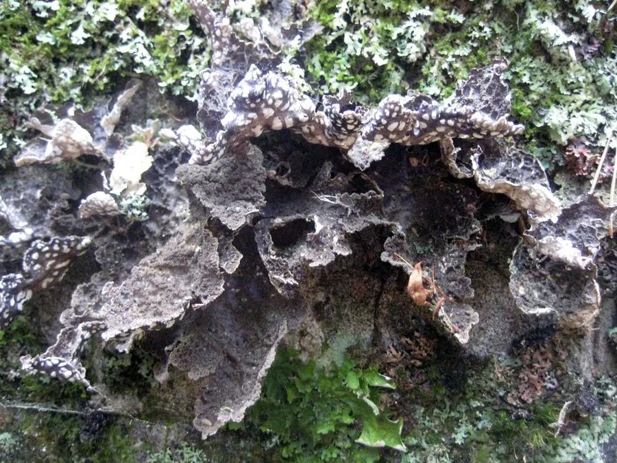

真菌 · 真菌界
网肺衣 Lobaria retigera

叶状地衣的一种，扁平地衣体表面有网状皱褶，形似肺部，常附生在湿润山林的树干和岩石上，对空气污染敏感。
- 分类
- 门子囊菌门纲茶渍纲目地卷目科肺衣科属肺衣属
- 栖息环境
- 湿润山地森林的树干、岩石和苔藓上，靠吸收空气水分生长
- 地理分布
- 温带和亚热带高海拔林区，中国西南、华中和东北山地有分布
- 保护级别
- 暂无评估（IUCN 未评估，中国未列入重点保护名录）
物种志
网肺衣是地衣，由子囊菌与绿藻共生形成。它的地衣体呈叶状，宽 5–20 cm，边缘有裂片，表面呈灰绿色至褐色，湿润时变为鲜绿色，干燥时呈灰褐色；表面有明显的网状皱褶和凹坑，形状像肺，因此得名；背面呈浅褐色，常长有绒毛状结构，并带有固着器。
网肺衣多生于湿润山地森林的树干、岩石和苔藓上，在温带和亚热带的高海拔林区分布，中国西南、华中、东北等地的山地有分布。它靠地衣体吸收空气中的水分和养分，对空气污染特别是二氧化硫非常敏感，因此常被用作环境监测的指示物种。网肺衣在传统上也被用作药材和染料，采集时要注意保护野生地衣资源，不要在污染严重的地区采集。
形态与习性
- 分类地衣，由子囊菌与绿藻共生形成
- 地衣体叶状，宽 5–20 cm，边缘有裂片
- 表面有网状皱褶和凹坑，形似肺部
- 颜色湿润时鲜绿色，干燥时灰褐色
- 生境湿润山地森林的树干、岩石和苔藓上
- 指示作用对二氧化硫等空气污染敏感，可作监测指示地衣
- 用途传统药材和天然染料来源
趣味知识
- 网肺衣的地衣体表面有网状皱褶，形状像肺，因此得名。
- 它对空气污染特别是二氧化硫非常敏感，是环境监测的指示地衣。
- 湿润时呈鲜绿色，干燥时变为灰褐色。
- 网肺衣在传统上被用作药材和染料。